Mieszkanie w bloku: nowy sufit, gładzie i malowanie
Popękane sufity zastąpiliśmy sufitem podwieszanym G-K, ściany i sufity wyrównaliśmy gładzią i pomalowaliśmy na biało.
Gładzie — szczegółyBielsko-Biała i okolice
Równe ściany, czysto po pracy i termin, którego dotrzymujemy. Kosztorys dostajesz na piśmie — bez ukrytych kosztów.
Nasze usługi — wybierz i sprawdź szczegóły
Tradycyjne i natryskowe
Standard wykończenia Q1–Q4
Faktury i efekty dekoracyjne
Zabudowy gipsowo-kartonowe
Odnowienie i zabezpieczenie
Zakres dopasowany do wnętrza
Nasze realizacje
Prawdziwe zdjęcia z naszych remontów, bez wizualizacji i zdjęć z katalogu.
Popękane sufity zastąpiliśmy sufitem podwieszanym G-K, ściany i sufity wyrównaliśmy gładzią i pomalowaliśmy na biało.
Gładzie — szczegóły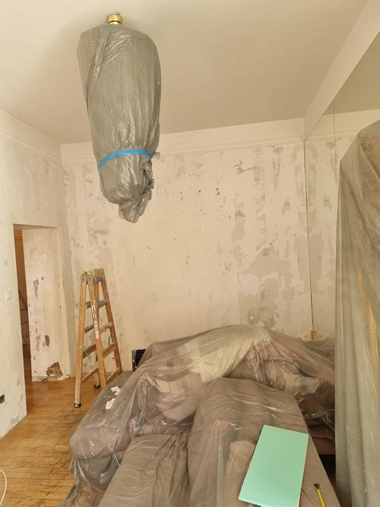

Naprawa podłoża, gładzie i malowanie z zachowaniem odsłoniętej cegły. Wszystko zabezpieczone, posprzątane, gotowe do zamieszkania.
Malowanie — szczegóły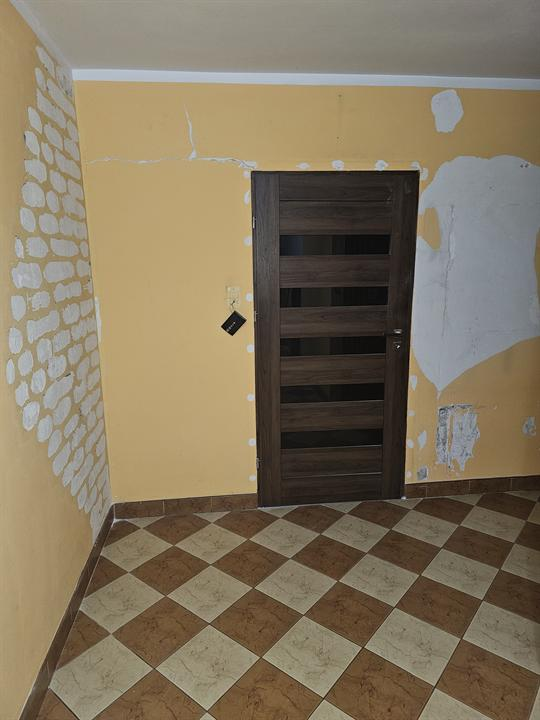
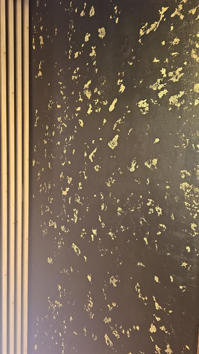
Ze zniszczonej ściany w przedpokoju zrobiliśmy efektowną, ręcznie wykonaną fakturę, która stała się ozdobą całego mieszkania.
Ściany dekoracyjne — szczegóły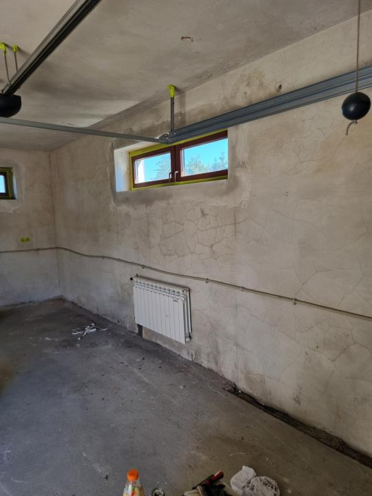
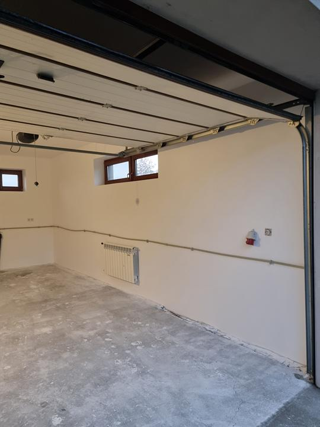
Surowe ściany przygotowaliśmy, zagruntowaliśmy i pomalowaliśmy. Jasne, łatwe w utrzymaniu wnętrze zamiast szarego betonu.
Malowanie — szczegóły
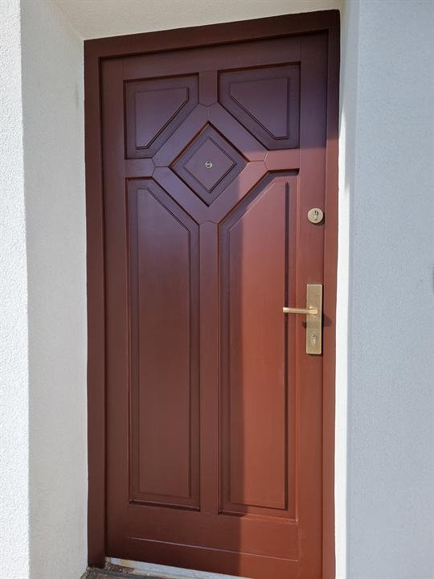
Szlifowanie, naprawa ubytków i nowe zabezpieczenie lakierem. Drzwi wyglądają jak nowe, a drewno jest chronione na lata.
Renowacja drewna — szczegóły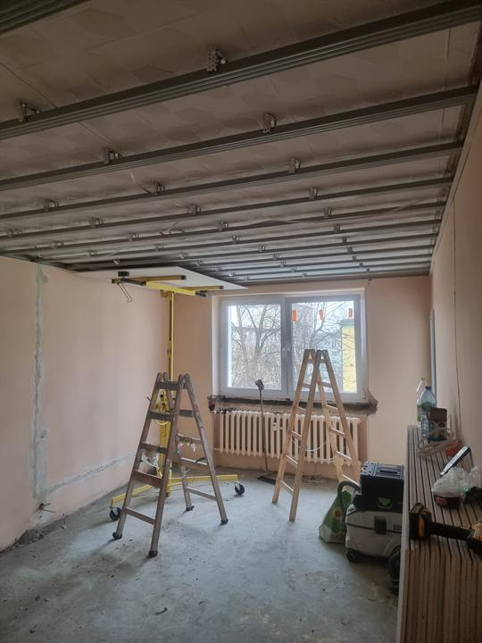

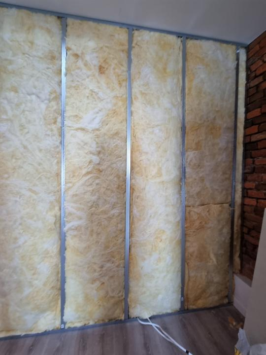
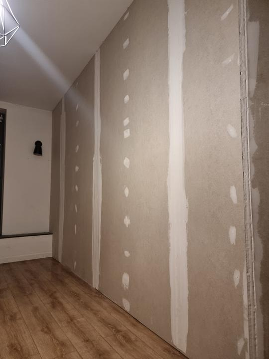
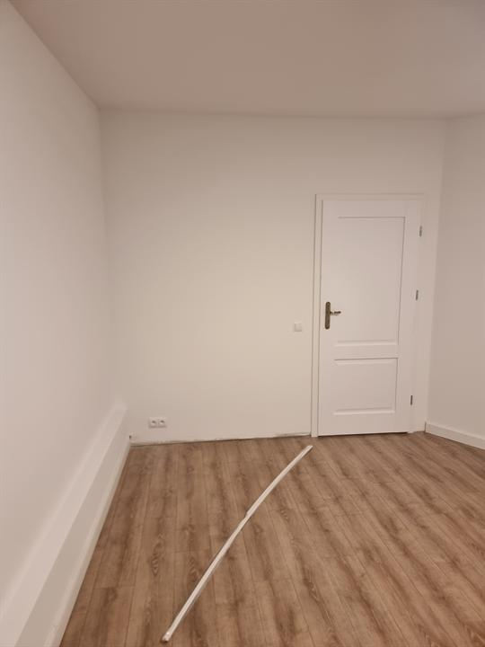
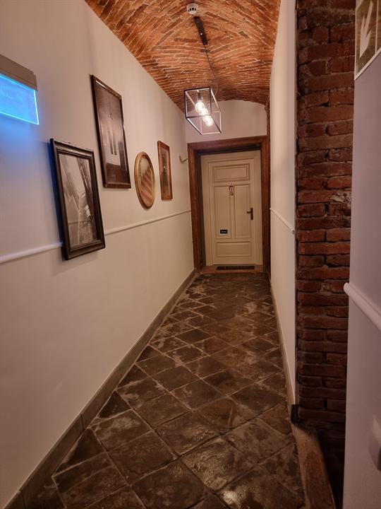
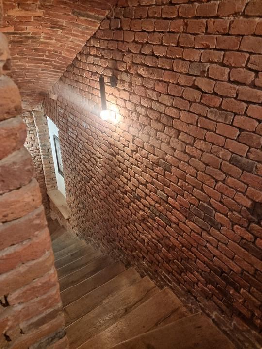


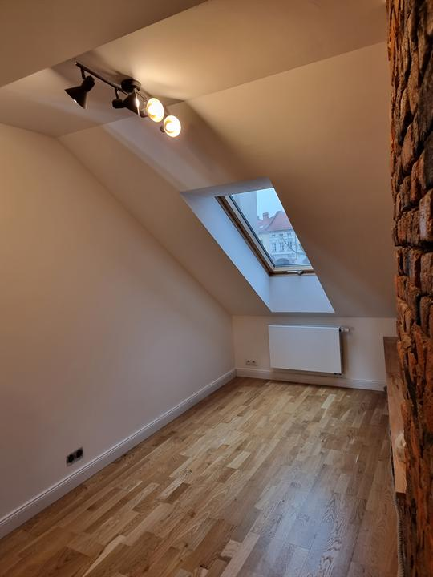
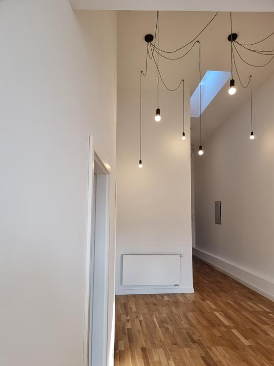
Opinie klientów
Co mówią o nas klienci, którzy nas wpuścili do swoich domów.
★★★★★„Bardzo polecam! Płyty, gładzie i malowanie wykonane bardzo starannie i dokładnie.”
Justyna W. · opinia z Google
★★★★★„Miła, profesjonalna i kulturalna załoga dwóch Panów wykonała zlecenie solidnie. Polecam.”
Łukasz M. · opinia z Google
Poznaj nas
Profil działalnościWykańczamy mieszkania i domy w Bielsku-Białej i okolicach. W każdą realizację wkładamy zaangażowanie, dopracowując detale z najwyższą rzemieślniczą precyzją.
Nasza zasada jest prosta: dowozimy umówioną jakość i nigdy nie spóźniamy się z terminem oddania inwestycji. Gwarantujemy sprawiedliwe rozliczenie bez ukrytych kosztów. U nas masz wszystko czarno na białym.
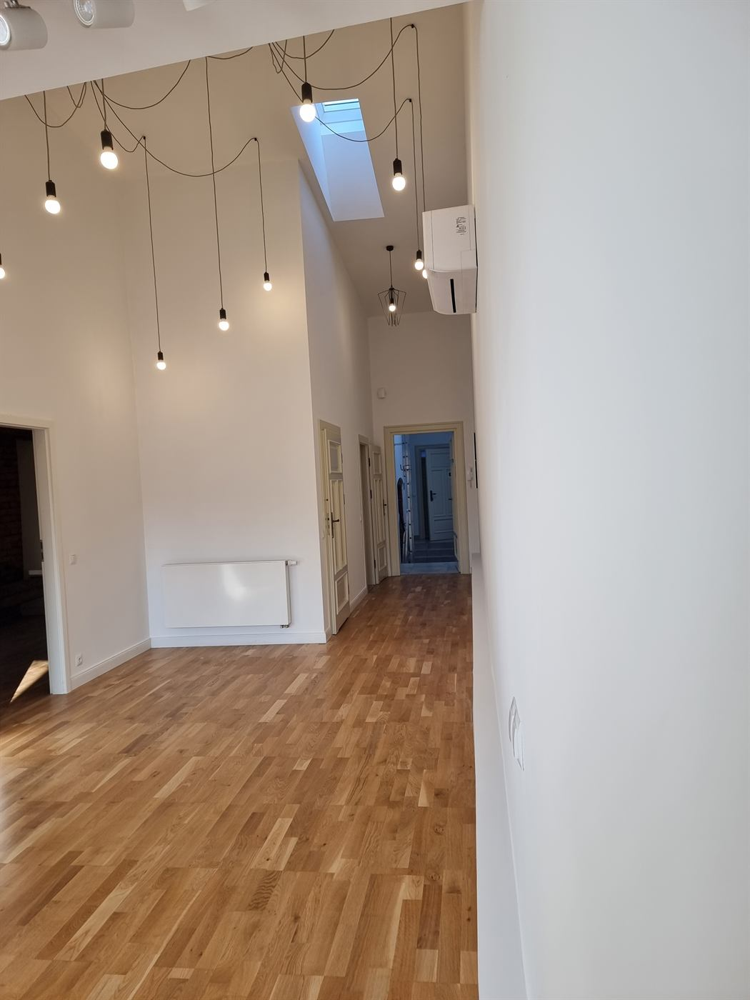
Co możemy zmienić
Świeża biel, spokojne odcienie czy mocny akcent? Malujemy metodą tradycyjną i natryskową, dopasowując sposób aplikacji do powierzchni i zakresu prac.
Pełna specyfikacja: MalowanieDobry efekt zaczyna się pod warstwą farby. Wykonujemy gładzie w standardzie wykończenia Q1–Q4, z zakresem dopasowanym do Twojego wnętrza.
Pełna specyfikacja: GładzieŚciana może być czymś więcej niż tłem. Dekoracyjne wykończenie nadaje wnętrzu charakter przez kolor, fakturę i sposób, w jaki pracuje na nim światło.
Pełna specyfikacja: Ściany dekoracyjneWykonujemy sufity oraz zabudowy z płyt gipsowo-kartonowych. Ustalamy rozwiązanie i zakres prac odpowiedni do planowanej przestrzeni.
Pełna specyfikacja: Sufity i zabudowy G-KOdnawiamy i zabezpieczamy drewno, by wydobyć jego charakter. Sposób renowacji i ochrony dobieramy do stanu oraz przeznaczenia powierzchni.
Pełna specyfikacja: Renowacja i ochrona drewnaZajmujemy się różnorodnymi pracami wykończeniowymi. Opowiedz nam, czego potrzebuje Twoje wnętrze — wspólnie ustalimy zakres.
Pełna specyfikacja: Prace wykończenioweBezpłatna wycena
Od pierwszej rozmowy do ustalenia harmonogramu — poznaj kolejne etapy.
Poproś o bezpłatną wycenęOmawiamy zakres planowanych prac, Twoje wizje oraz wstępne założenia dotyczące wykończenia wnętrza.
Spotykamy się na inwestycji, by ocenić stan podłoża, sprawdzić trudne detale i wykonać precyzyjne pomiary.
Na podstawie oględzin precyzyjnie dobieramy chemię i sprawdzony system pracy dopasowany do Twoich wnętrz. Dzięki temu wiemy, co wycenić, aby zagwarantować najwyższy standard.
Otrzymujesz szczegółową ofertę z podziałem na etapy prac, dającą pełną jasność i kontrolę nad budżetem.
Po zatwierdzeniu wyceny ustalamy dokładne ramy czasowe. Od tego momentu bierzemy na siebie zakup i transport materiałów, a Ty wiesz dokładnie, kiedy wchodzimy na inwestycję i kiedy z niej wychodzimy.
Blog · Porady przed remontem
Gładzie, malowanie, zabudowy G-K i sufity podwieszane. Praktyczne odpowiedzi, które pomogą Ci zaplanować wykończenie wnętrza.
Co oznaczają poziomy szpachlowania Q1, Q2, Q3 i Q4? Sprawdź, jak ustalić standard płyt G-K pod malowanie i oświetlenie boczne.
Czytaj poradnik3 min czytania Malowanie wnętrzOd czego zależy cena malowania ścian i sufitów? Sprawdź, jak porównać oferty, policzyć powierzchnię i przygotować dane do bezpłatnej wyceny.
Czytaj poradnik3 min czytania Sufity podwieszanePlanujesz sufit podwieszany z płyt G-K? Sprawdź, co ustalić o wysokości, oświetleniu, instalacjach, obciążeniach i wycenie zabudowy.
Czytaj poradnik3 min czytaniaBielsko-Biała i okolice · bezpłatna wycena
Masz pomysł, gotowy projekt albo dopiero planujesz zmiany? Wybierz wygodny sposób kontaktu i poproś o bezpłatną wycenę.
Wróć na początek